Chapter 3：转动光谱¶
转动: 非限域、自由空间。必须为气态，极性分子。 波段：微波、毫米波
-
0.1mm ～ 1mm
-
10GHz ～ 1THz
3.1 转动惯量¶
3.1.1 定义¶
-
\(m_i\)：第 \(i\) 个质点的质量
-
\(r_i\)：第 \(i\) 个质点到转轴的垂直距离
-
旋转轴穿过质心
从数学和几何角度看，存在无数条穿过质心的旋转轴，对应无数个转动惯量数值。通过对角化转动惯量这个二阶张量，我们总能找到一组特殊的坐标系（三个相互垂直的主轴），对应的三个转动惯量 \(I_A,I_B,I_C\) 叫做主转动惯量。
3.1.2 典型分子的转动惯量¶
线性双原子分子¶
$$ \begin{aligned} I &= \mu R^2 \ \mu &= \frac{m_A m_B}{m} \end{aligned} $$ - \( \mu \)：约化质量 - \( R \)：两原子间距 - \( m = m_A + m_B \)：总质量
线性三原子分子¶
球形转子¶
| 分子类型 | 主转动惯量关系 | Example |
|---|---|---|
| 线性分子 | \(I_A \approx 0, \quad I_B = I_C\) | CO₂, HCl |
| 球形转子 | \(I_A = I_B = I_C\) | CH₄, SF₆ |
| 对称转子 | \(I_A = I_B \neq I_C\) | NH₃, 苯 |
| 不对称转子 | \(I_A \neq I_B \neq I_C\) | H₂O, 乙醇 |
3.2 线性刚性转子转动能级¶
3.2.1 转动哈密顿量¶
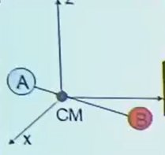
哈密顿量为动能之和（无势阱非限域V=0） $$ T_N = -\frac{\hbar^2}{2m_A}\nabla_A^2 - \frac{\hbar^2}{2m_B}\nabla_B^2 $$
分解内外运动模式为质心平动与内部转动
其中 - 平动总质量 $$ \begin{aligned} M &= m_A + m_B \end{aligned} $$
- 约化质量 $$ \begin{aligned} \mu &= \frac{m_A m_B}{m_A + m_B} \end{aligned} $$
转动模式球坐标变化与刚性转子化简 $$ \begin{aligned} T_N &= -\frac{\hbar^2}{2\mu}\nabla_{\text{int}}^2 = -\frac{\hbar^2}{2\mu}\left( \frac{\partial^2}{\partial R^2} + \frac{2}{R}\frac{\partial}{\partial R} - \frac{\hat{L}^2}{R^2 \hbar^2} \right) \end{aligned} $$
刚性转子，\(R\)不变： $$ \begin{aligned} T_N &= \frac{\hbar^2 \hat{L}^2}{2\mu R^2 \hbar^2} = \frac{\hat{L}^2}{2I} \quad (\text{转动哈密顿量}) \end{aligned} $$
其中角动量平方算符：
3.2.2 转动能级¶
求解薛定谔方程，得到转动能级：
无外场，无限域能，最低能量可取到0。
定义转动常数
转动能级表达式
若以\(\text{cm}^{-1}\)为能量单位：
3.2.3 转动波函数¶
球谐函数完整表达式 $$ Y_{Jm}(\theta, \phi) = \sqrt{\frac{2J + 1}{4\pi} \frac{(J - |m|)!}{(J + |m|)!}} P_J^{|m|}(\cos\theta) e^{im\phi} $$
-
转动量子数：\(J = 0,1,2,\dots\)
-
磁量子数：\(m_j = 0,\pm1,\dots,\pm J\) （简并度 \(2J + 1\)）
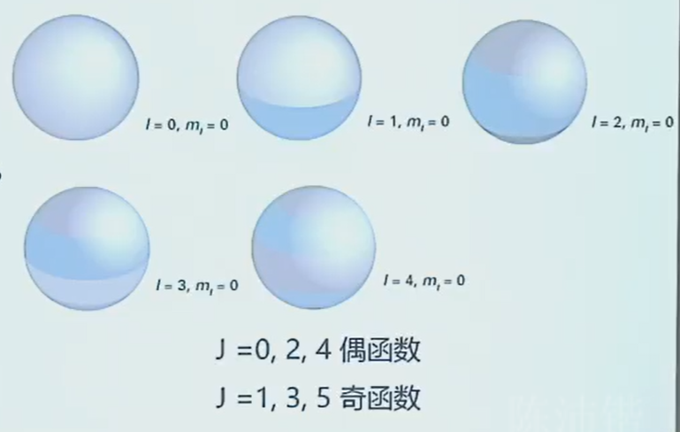
3.2.4 跃迁偶极¶
此处\(\mu\)是分子的永久偶极矩，不同于（类）氢原子，原子核的正电荷和核外电子的负电荷的相对位置，偶极矩的变化来自电子在不同轨道间跃迁时，电荷空间分布的改变。
电偶极矩算符 $$ \begin{aligned} \hat{\mu} &= -e\vec{r} \end{aligned} $$
转动波函数 $$ Y(\theta, \phi) = \Theta(\theta)\Phi(\phi) $$
3.2.5 跃迁选择定则¶
- 必须是具有永久偶极的分子
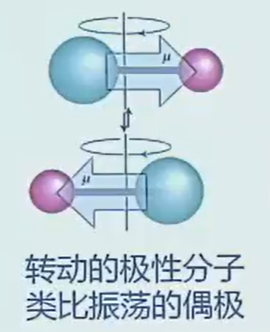
极性越强，跃迁越强
- 相邻转动能级跃迁 $$ \begin{aligned} \Delta J &= \pm1 \ \Delta m_J &= 0,\pm1 \end{aligned} $$
3.3 线性刚性转子转动光谱¶
3.3.1 光谱间隔¶
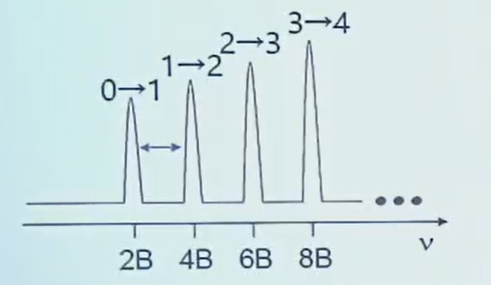
光谱谱线等间隔，间隔为\(2\tilde{B}\)。 同位素效应使大的等间距谱线间有小的等间距谱线。
3.3.2 同位素效应¶
-
小峰 \(^{13}\text{CO}\) 1.1% 天然丰度
-
大峰 \(^{12}\text{CO}\) 98.9% 天然丰度
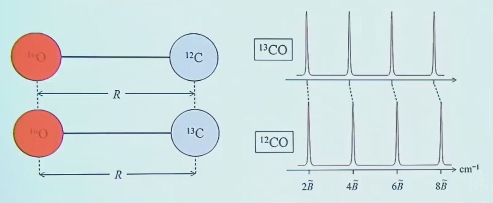
3.3.3 包络形状¶
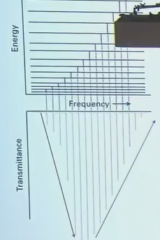
光谱的包络形状影响因素：
- \(J \to J+1\) 对应能级之间跃迁偶极矩大小
不同J差别不大
- 转动能级上的分子布局数：初始有多少分子
简并度因子：态数
玻尔兹曼因子：单态分布
对\(J\)求导取极值：
得到最概然转动量子数： $$ {J_{\text{max}} = \sqrt{\frac{k_B T}{2hc\tilde{B}}} - \frac{1}{2}} $$
谱线强度规律
-
强度随\(J\)快速上升（简并度上升），然后下降（玻尔兹曼因子指数衰减）
-
谱线强度分布取决于温度
3.3.4 线性转子离心畸变¶
离心畸变 → 增加转动惯量 → 减小转动常数 → 减小能隙
\(J\)越大，离心畸变越大
带离心畸变矫正的转动能级公式：
方框内为离心畸变矫正项
离心畸变常数 $$ \tilde{D} = \frac{4\tilde{B}^3}{\nu^2} $$ 其中： - \(\nu\)：键振动频率（反映键强度）
-
C-C：\(\nu \sim 1000\ \text{cm}^{-1}\)
-
C=C：\(\nu \sim 1600\ \text{cm}^{-1}\)
-
C≡C：\(\nu \sim 2100\ \text{cm}^{-1}\)
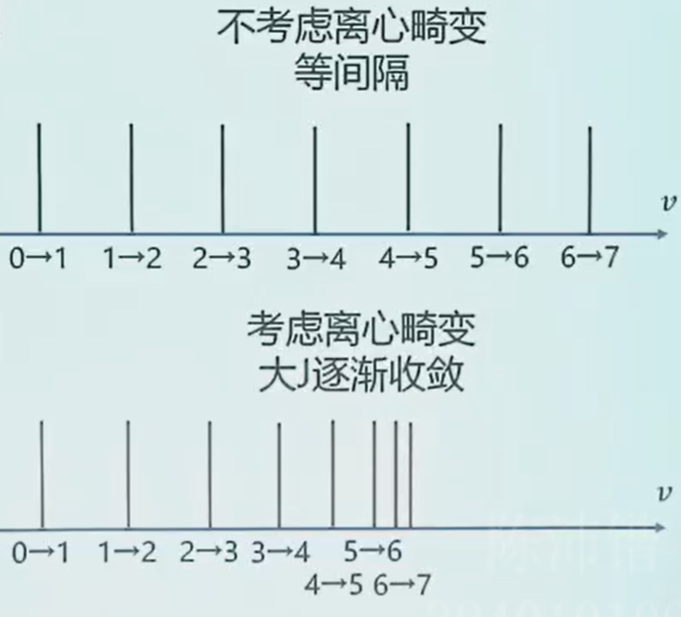
3.4 对称转子转动能级和光谱¶
3.4.1 球形转子能级¶
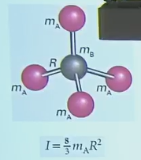
球形 \(I_a = I_b = I_c = I\)
球形转子和线性转子的能级和光谱特征一样
3.4.2 对称转子能级¶
哈密顿量：可将后面一项认为是主轴方向的一个额外分量
a是分子对称主轴（偶极的方向）
-
扁平椭球：\(I_a > I_b = I_c\)
- \(\text{NH}_3\)
- \(\text{C}_6\text{H}_6\)
- \(\text{XeF}_4\)
-
扁长椭球：\(I_a < I_b = I_c\)
- \(\text{CH}_3\text{Cl}\)
- \(\text{CH}_3\text{C≡CH}\)
转动能级：
量子数取值：
\(K\)是\(J\)在主轴上的投影，共\(2J+1\)个取值，\(M_J\)是人为外场方向
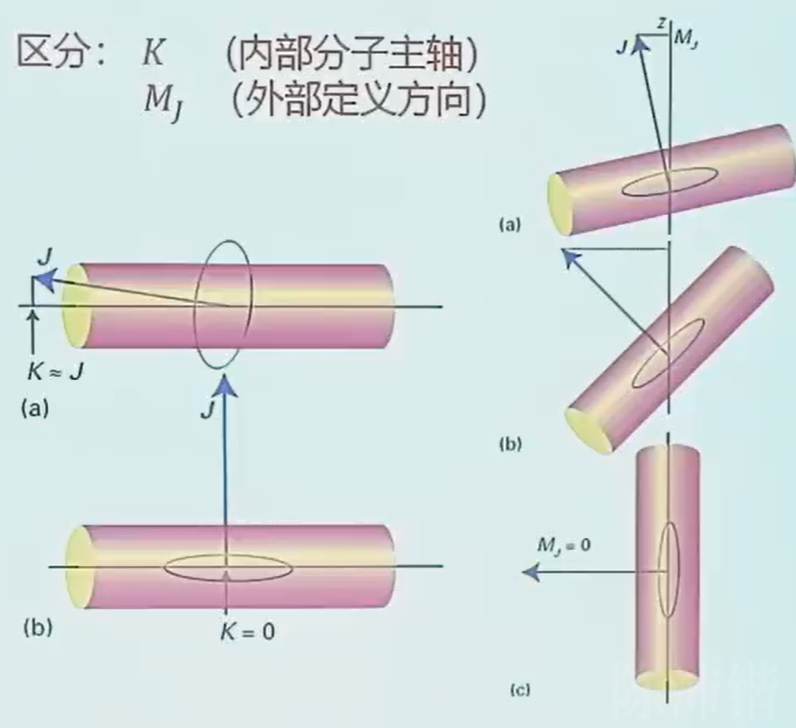
转动常数(\(\text{cm}^{-1}\))：
3.4.3 对称转子光谱¶
光谱¶
扁长椭球
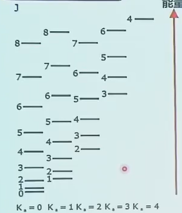
扁平椭球
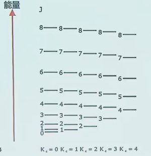
\(K\)是\(J\)在主轴上的投影，\(|K|≤J\)。能级高低发生改变，但不影响跃迁能量（不考虑离心畸变）。
选择定则¶
跃迁频率
- 同样的\(J\rightarrow J+1\)跃迁，不同\(K\)对应相同的跃迁能量
- 频率间隔和线性转子一样（虽然多了一个不同的转动惯量/常数）
如果考虑离心畸变
转动能级：
跃迁能量和\(K\)相关：
光谱特征：
-
转动谱线不等间隔
-
相同J，不同K → 谱线裂分
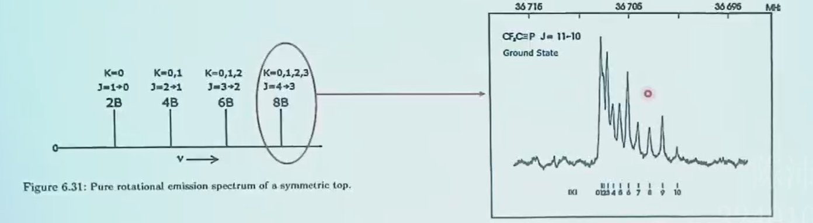
3.5 不对称转子光谱¶
哈密顿量： $$ \begin{aligned} H_{rot} = \frac{L_a^2}{2I_a} + \frac{L_b^2}{2I_b} + \frac{L_c^2}{2I_c} \end{aligned} $$
需要三个量子数：
分子总偶极矩 \(\vec{\mu}\) 沿三个惯量主轴 \(a、b、c\) 分解为分量 \(\mu_a、\mu_b、\mu_c\)。三个偶极矩，每个产生一组可能的跃迁和对应的选律，十分复杂。